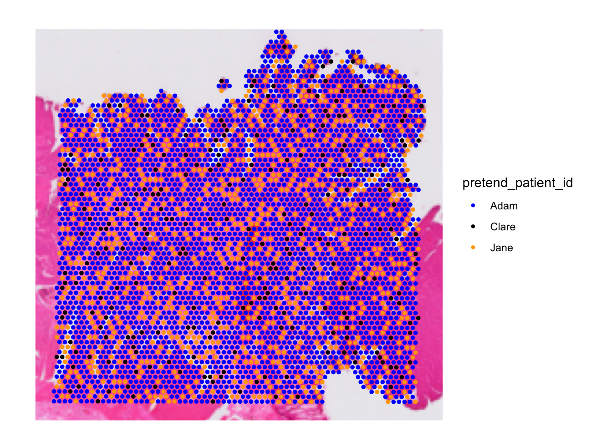
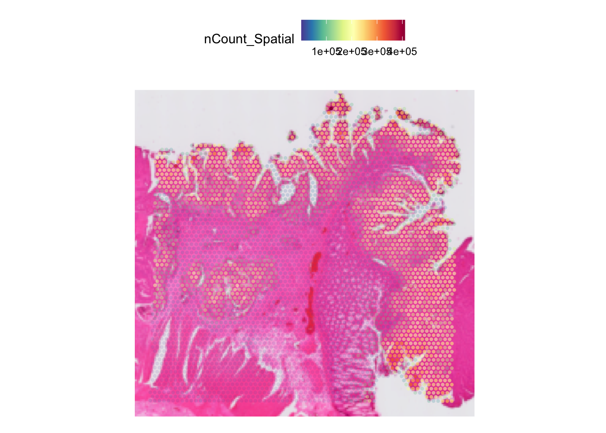

Visium FFPE Colon Tissue Analysis
Givanna Putri
2024-10-30
Last updated: 2024-11-06
Checks: 6 1
Knit directory: asi_spatial_workshop_2024/
This reproducible R Markdown analysis was created with workflowr (version 1.7.1). The Checks tab describes the reproducibility checks that were applied when the results were created. The Past versions tab lists the development history.
The R Markdown file has unstaged changes. To know which version of
the R Markdown file created these results, you’ll want to first commit
it to the Git repo. If you’re still working on the analysis, you can
ignore this warning. When you’re finished, you can run
wflow_publish to commit the R Markdown file and build the
HTML.
Great job! The global environment was empty. Objects defined in the global environment can affect the analysis in your R Markdown file in unknown ways. For reproduciblity it’s best to always run the code in an empty environment.
The command set.seed(20240925) was run prior to running
the code in the R Markdown file. Setting a seed ensures that any results
that rely on randomness, e.g. subsampling or permutations, are
reproducible.
Great job! Recording the operating system, R version, and package versions is critical for reproducibility.
Nice! There were no cached chunks for this analysis, so you can be confident that you successfully produced the results during this run.
Great job! Using relative paths to the files within your workflowr project makes it easier to run your code on other machines.
Great! You are using Git for version control. Tracking code development and connecting the code version to the results is critical for reproducibility.
The results in this page were generated with repository version 1a2b848. See the Past versions tab to see a history of the changes made to the R Markdown and HTML files.
Note that you need to be careful to ensure that all relevant files for
the analysis have been committed to Git prior to generating the results
(you can use wflow_publish or
wflow_git_commit). workflowr only checks the R Markdown
file, but you know if there are other scripts or data files that it
depends on. Below is the status of the Git repository when the results
were generated:
Ignored files:
Ignored: .DS_Store
Ignored: .Rhistory
Ignored: .Rproj.user/
Ignored: data/.DS_Store
Ignored: data/hello.txt
Ignored: data/single_cell/
Ignored: data/visium_ffpe_human_prostate/
Ignored: data/visium_human_crc/
Ignored: output/.DS_Store
Untracked files:
Untracked: analysis/visium_ffpe_prostate.Rmd.bk
Untracked: output/visium_data_qced.qs
Untracked: output/visium_data_qced.rds
Unstaged changes:
Modified: analysis/visium_crc.Rmd
Note that any generated files, e.g. HTML, png, CSS, etc., are not included in this status report because it is ok for generated content to have uncommitted changes.
These are the previous versions of the repository in which changes were
made to the R Markdown (analysis/visium_crc.Rmd) and HTML
(docs/visium_crc.html) files. If you’ve configured a remote
Git repository (see ?wflow_git_remote), click on the
hyperlinks in the table below to view the files as they were in that
past version.
| File | Version | Author | Date | Message |
|---|---|---|---|---|
| Rmd | 1a2b848 | Givanna Putri | 2024-11-05 | Add tutorials for visium |
| html | 1a2b848 | Givanna Putri | 2024-11-05 | Add tutorials for visium |
Setup
library(Seurat)Loading required package: SeuratObjectLoading required package: sp'SeuratObject' was built under R 4.4.0 but the current version is
4.4.1; it is recomended that you reinstall 'SeuratObject' as the ABI
for R may have changed
Attaching package: 'SeuratObject'The following objects are masked from 'package:base':
intersect, t# for plotting
library(ggplot2)
library(scales)
library(patchwork)
# for exporting object
library(qs)qs 0.27.2. Announcement: https://github.com/qsbase/qs/issues/103Loading data
The H5 file and the spatial folder came from SpaceRanger.
The spatial folder is required for seurat to find the following extra information:
tissue_lowres_image.png: the image of the slidescalefactors_json.json: the scale factors to convert the high-resolution coordinates and the scaled-down coordinates - need to check whether this is the conversion from the high res image to low res.tissue_positions_list.csv: coordinates for each spot
NOTE the function requires hdf5r package.
First up, let’s import our data into a seurat object.
dat <- Load10X_Spatial(
data.dir = 'data/visium_human_crc',
filename = 'filtered_feature_bc_matrix.h5'
)Inspecting Seurat object
TODO: add a diagram to show what seurat object looks like, if there is any?
We can inspect the object to see the number of spots and genes there are in the dataset.
# 4,269 spots - samples in the seurat object description
# 18,085 genes.
datAn object of class Seurat
18085 features across 4269 samples within 1 assay
Active assay: Spatial (18085 features, 0 variable features)
1 layer present: counts
1 spatial field of view present: slice1A Seurat object can contain multiple Assays. The idea behind assay is so we can store data from different omics technologies in one object.
Within an assay, we can have multiple Layers, each containing one spot by gene matrix. In subsequent sections, when we perform some transformations to the data, we shall see how storing the same data but transformed it in different manner in different Layers can come in handy.
By default, when we run Load10x_Spatial, Seurat will
store the raw spot by gene matrix in Spatial assay under
counts Layer. You can change the assay name by specifying
the assay parameter when running the
Load10x_Spatial function.
We can retrieve the spot by gene matrix like so:
# showing only 20 genes for 5 spots
head(dat[["Spatial"]]$counts, c(20, 5))20 x 5 sparse Matrix of class "dgCMatrix"
AACAATGTGCTCCGAG-1 AACACCATTCGCATAC-1 AACACGACAACGGAGT-1
SAMD11 1 1 .
NOC2L 4 . 12
KLHL17 . . 1
PLEKHN1 2 . 11
PERM1 . . .
HES4 2 1 3
ISG15 10 3 18
AGRN 6 . 25
RNF223 . . 1
C1orf159 3 . 1
TTLL10 1 . .
TNFRSF18 1 . 2
TNFRSF4 . . 1
SDF4 29 3 45
B3GALT6 6 . 12
C1QTNF12 1 . .
UBE2J2 6 2 14
SCNN1D . . .
ACAP3 14 1 8
PUSL1 3 . 4
AACACGCAGATAACAA-1 AACACGTTGATACCGC-1
SAMD11 . .
NOC2L . .
KLHL17 1 1
PLEKHN1 . 2
PERM1 . 1
HES4 . .
ISG15 . 1
AGRN . .
RNF223 . .
C1orf159 . .
TTLL10 . .
TNFRSF18 . 1
TNFRSF4 . 2
SDF4 5 7
B3GALT6 . 2
C1QTNF12 . .
UBE2J2 1 2
SCNN1D . 1
ACAP3 . 5
PUSL1 1 .By default, genes (features) are stored as rows and spots (or cells) are stored as columns.
Different assay can have different features, and as of Seurat v5, different assay and layer can have different spots (or cells).
Gene and spot metadata
We can retrieve the name of the genes we have in the data like so:
head(rownames(dat), 20) [1] "SAMD11" "NOC2L" "KLHL17" "PLEKHN1" "PERM1" "HES4"
[7] "ISG15" "AGRN" "RNF223" "C1orf159" "TTLL10" "TNFRSF18"
[13] "TNFRSF4" "SDF4" "B3GALT6" "C1QTNF12" "UBE2J2" "SCNN1D"
[19] "ACAP3" "PUSL1" head(Features(dat), 20) [1] "SAMD11" "NOC2L" "KLHL17" "PLEKHN1" "PERM1" "HES4"
[7] "ISG15" "AGRN" "RNF223" "C1orf159" "TTLL10" "TNFRSF18"
[13] "TNFRSF4" "SDF4" "B3GALT6" "C1QTNF12" "UBE2J2" "SCNN1D"
[19] "ACAP3" "PUSL1" And the unique name assigned to each spot like so:
head(colnames(dat), 20) [1] "AACAATGTGCTCCGAG-1" "AACACCATTCGCATAC-1" "AACACGACAACGGAGT-1"
[4] "AACACGCAGATAACAA-1" "AACACGTTGATACCGC-1" "AACACTCGTGAGCTTC-1"
[7] "AACAGCCTCCTGACTA-1" "AACAGGAATTCTGTGA-1" "AACAGGCCAGGCCGCT-1"
[10] "AACAGGCCATTGTCAC-1" "AACAGTCGAGGTAGAT-1" "AACAGTCTGACGAATT-1"
[13] "AACATACTCCAGCTGA-1" "AACATAGAAGACTGTT-1" "AACATAGAAGGTGAGT-1"
[16] "AACATAGAAGTGCGCA-1" "AACATAGGAGGCGTCC-1" "AACATAGGTCCATAGC-1"
[19] "AACATAGGTTCCGCAC-1" "AACATAGGTTGGCACC-1"head(Cells(dat), 20) [1] "AACAATGTGCTCCGAG-1" "AACACCATTCGCATAC-1" "AACACGACAACGGAGT-1"
[4] "AACACGCAGATAACAA-1" "AACACGTTGATACCGC-1" "AACACTCGTGAGCTTC-1"
[7] "AACAGCCTCCTGACTA-1" "AACAGGAATTCTGTGA-1" "AACAGGCCAGGCCGCT-1"
[10] "AACAGGCCATTGTCAC-1" "AACAGTCGAGGTAGAT-1" "AACAGTCTGACGAATT-1"
[13] "AACATACTCCAGCTGA-1" "AACATAGAAGACTGTT-1" "AACATAGAAGGTGAGT-1"
[16] "AACATAGAAGTGCGCA-1" "AACATAGGAGGCGTCC-1" "AACATAGGTCCATAGC-1"
[19] "AACATAGGTTCCGCAC-1" "AACATAGGTTGGCACC-1"We can also query the seurat object as if it is a table by using
functions like ncol, nrow, and
dim:
# how many spots
ncol(dat)[1] 4269# how many genes
nrow(dat)[1] 18085# how many genes and spots (rows and cols respectively)
dim(dat)[1] 18085 4269Metadata for the spots can be retrieved like so:
head(dat[[]], 20) orig.ident nCount_Spatial nFeature_Spatial
AACAATGTGCTCCGAG-1 SeuratProject 159480 12673
AACACCATTCGCATAC-1 SeuratProject 5719 3393
AACACGACAACGGAGT-1 SeuratProject 244735 13370
AACACGCAGATAACAA-1 SeuratProject 12387 6003
AACACGTTGATACCGC-1 SeuratProject 58894 11198
AACACTCGTGAGCTTC-1 SeuratProject 55548 10947
AACAGCCTCCTGACTA-1 SeuratProject 270292 13726
AACAGGAATTCTGTGA-1 SeuratProject 14250 5628
AACAGGCCAGGCCGCT-1 SeuratProject 146950 13120
AACAGGCCATTGTCAC-1 SeuratProject 120019 12746
AACAGTCGAGGTAGAT-1 SeuratProject 200220 13057
AACAGTCTGACGAATT-1 SeuratProject 136015 12656
AACATACTCCAGCTGA-1 SeuratProject 65435 12270
AACATAGAAGACTGTT-1 SeuratProject 200960 12695
AACATAGAAGGTGAGT-1 SeuratProject 8817 4874
AACATAGAAGTGCGCA-1 SeuratProject 233746 13541
AACATAGGAGGCGTCC-1 SeuratProject 54057 11153
AACATAGGTCCATAGC-1 SeuratProject 117304 12415
AACATAGGTTCCGCAC-1 SeuratProject 11350 5506
AACATAGGTTGGCACC-1 SeuratProject 146714 12390Here, each row is a spot. nCount_Spatial shows the total
number of transcripts (specifically total number of unique UMIs) for
that spot. nFeature_Spatial shows how many unique genes is
expressed per spot. orig.ident refers to the “original
identity” of the sample. By default, the Load10x_Spatial
will pre-fill this with “SeuratProject”.
The metadata in seurat object is actually stored as a data.frame.
class(dat[[]])[1] "data.frame"Thus, we can add more information into it using functions that work for data.frame. For example, we can add a separate column identifying the patient ID the data originates from:
dat$patient_id <- "P2"
head(dat[[]], 20) orig.ident nCount_Spatial nFeature_Spatial patient_id
AACAATGTGCTCCGAG-1 SeuratProject 159480 12673 P2
AACACCATTCGCATAC-1 SeuratProject 5719 3393 P2
AACACGACAACGGAGT-1 SeuratProject 244735 13370 P2
AACACGCAGATAACAA-1 SeuratProject 12387 6003 P2
AACACGTTGATACCGC-1 SeuratProject 58894 11198 P2
AACACTCGTGAGCTTC-1 SeuratProject 55548 10947 P2
AACAGCCTCCTGACTA-1 SeuratProject 270292 13726 P2
AACAGGAATTCTGTGA-1 SeuratProject 14250 5628 P2
AACAGGCCAGGCCGCT-1 SeuratProject 146950 13120 P2
AACAGGCCATTGTCAC-1 SeuratProject 120019 12746 P2
AACAGTCGAGGTAGAT-1 SeuratProject 200220 13057 P2
AACAGTCTGACGAATT-1 SeuratProject 136015 12656 P2
AACATACTCCAGCTGA-1 SeuratProject 65435 12270 P2
AACATAGAAGACTGTT-1 SeuratProject 200960 12695 P2
AACATAGAAGGTGAGT-1 SeuratProject 8817 4874 P2
AACATAGAAGTGCGCA-1 SeuratProject 233746 13541 P2
AACATAGGAGGCGTCC-1 SeuratProject 54057 11153 P2
AACATAGGTCCATAGC-1 SeuratProject 117304 12415 P2
AACATAGGTTCCGCAC-1 SeuratProject 11350 5506 P2
AACATAGGTTGGCACC-1 SeuratProject 146714 12390 P2To access the metadata associated with the genes, we can use similar notation and also include which assay we want to retrieve the metadata from.
head(dat[['Spatial']][[]], 20)data frame with 0 columns and 20 rowsVisualising the spots
Seurat offers function to visualise the spots captured on the tissue.
One that is very commonly used is SpatialFeaturePlot which
place the spots on top of the tissue image and colour the spots by
whatever features you have in the Seurat object.
For example, let’s visualise the library size of the spots.
SpatialFeaturePlot(dat, features = "nCount_Spatial")
| Version | Author | Date |
|---|---|---|
| 1a2b848 | Givanna Putri | 2024-11-05 |
You can also visualise multiple features at a time, e.g., let’s also visualise the number of genes expressed for each spot as well as the library size:
SpatialFeaturePlot(dat, features = c("nCount_Spatial", "nFeature_Spatial"))
| Version | Author | Date |
|---|---|---|
| 1a2b848 | Givanna Putri | 2024-11-05 |
By default, the plot will focus on the the area of the tissue where spots containing spots. Disabling this will show entire tissue.
SpatialFeaturePlot(dat, features = "nCount_Spatial", crop=FALSE)
| Version | Author | Date |
|---|---|---|
| 1a2b848 | Givanna Putri | 2024-11-05 |
Often, spots may look too small, like in this case. We can increase
it by increasing the pt.size.factor parameter.
# store it so we can use the same number later on
pt_size <- 5
SpatialFeaturePlot(dat, features = c("nCount_Spatial", "nFeature_Spatial"),
pt.size.factor = pt_size)
| Version | Author | Date |
|---|---|---|
| 1a2b848 | Givanna Putri | 2024-11-05 |
To visualise qualitative features, we can use
SpatialDimPlot. For example, let’s visualise the spot by
the patient ID metadata we added before.
SpatialDimPlot(dat, group.by = 'patient_id', pt.size.factor = pt_size)
| Version | Author | Date |
|---|---|---|
| 1a2b848 | Givanna Putri | 2024-11-05 |
We can override the spot colour by overriding the cols
parameter with a named vector mapping the discrete category in the data
against the colour.
# pretend we have three patients in the data
dat[[]]$pretend_patient_id <- c(
rep("Adam", 3000),
rep("Jane", 1000),
rep("Clare", 269)
)
SpatialDimPlot(dat, group.by = 'pretend_patient_id',
pt.size.factor = pt_size,
cols = c("Adam" = "blue", "Jane" = "orange", "Clare" = "black"))
| Version | Author | Date |
|---|---|---|
| 1a2b848 | Givanna Putri | 2024-11-05 |
Tweaking spatial plots
Often, it is helpful to tweak the opacity of the spots or the background image to help us better visualise the spots and their features.
You can adjust the opacity of the spots by lowering the
alpha parameter:
SpatialFeaturePlot(
dat,
features = "nCount_Spatial",
pt.size.factor = pt_size,
alpha = 0.5
)
| Version | Author | Date |
|---|---|---|
| 1a2b848 | Givanna Putri | 2024-11-05 |
Alpha parameter can take either a single numerical value or a range (a vector with 2 values). If the latter, it represents the minimum and maximum transparency and default to c(1,1), i.e. same transparency for both low and high value. Thus, we can accentuate the spots with high value by lowering the minimum value we pass as alpha:
SpatialFeaturePlot(
dat,
features = "nCount_Spatial",
pt.size.factor = 5,
alpha = c(0.1, 1)
)
| Version | Author | Date |
|---|---|---|
| 1a2b848 | Givanna Putri | 2024-11-05 |
The lower the minimum alpha value, the stronger the high expression will look.
However, it is often the case that the background image is too
overpowering, making it very hard to view the spots. We can make the
background more transparent by lowering the image.alpha
parameter.
SpatialFeaturePlot(
dat,
features = "nCount_Spatial",
pt.size.factor = pt_size,
image.alpha = 0.2
)
| Version | Author | Date |
|---|---|---|
| 1a2b848 | Givanna Putri | 2024-11-05 |
You can also completely forgo the tissue image by setting the
image.alpha to 0.
SpatialFeaturePlot(
dat,
features = "nCount_Spatial",
pt.size.factor = 4,
image.alpha = 0
)
| Version | Author | Date |
|---|---|---|
| 1a2b848 | Givanna Putri | 2024-11-05 |
Both SpatialFeaturePlot and SpatialDimPlot
will return a ggplot object, which we can modify using the
functionalities built into ggplot2 package.
As an example, let’s update the plot showing library size so we:
- Change the colour scheme to use viridis
- Rename
nCount_Spatialtolibrary_size - Have a black background and axes
Let’s update the plot so we have a black background and white letters and axes.
plt_dark_bg <- SpatialFeaturePlot(
dat,
features = "nCount_Spatial",
pt.size.factor = pt_size,
image.alpha = 0
) + scale_fill_viridis_c(option = 'viridis') +
labs(fill='library_size') +
theme_minimal() +
theme(
legend.text = element_text(colour = "white"),
legend.title = element_text(colour = "white"),
legend.background = element_rect(fill = "black"),
plot.background = element_rect(fill = "black"),
panel.grid = element_blank(),
axis.text = element_text(colour = "white"),
axis.line = element_line(colour = "white")
) Scale for fill is already present.
Adding another scale for fill, which will replace the existing scale.plt_dark_bg
| Version | Author | Date |
|---|---|---|
| 1a2b848 | Givanna Putri | 2024-11-05 |
Since the plot is a ggplot object, we can export them using either the export button in Rstudio’s panel, or the ggsave function:
ggsave(filename="output/spatial_plot_darkbg.png", plot=plt_dark_bg)Good to know: When there are multiple features drawn using
SpatialFeaturePlot, the resulting object is no longer a ggplot object but rather a “Large patchwork” object, an object generated by the patchwork package. This package is commonly used for combining plots in R. In actual fact, the large patchwork object itself is a list where each element is a ggplot object. Thus, to modify the plot, you will just need to override the object like above.
QC
We can divide the QC into two sections, QC the spots, and QC the genes.
QC genes
By default, Load10X_Spatial will include all genes in
the data. However, we may have genes that are only expressed in a
handful of spots and may well be noise.
# Count how many spots each gene is expressed in.
spots_per_gene <- rowSums(dat[["Spatial"]]$counts > 0)
# Plot as histogram
# Have to convert spots_per_gene to data.frame first, the column is spots
ggplot(data.frame(spots = spots_per_gene), aes(x=spots)) +
geom_histogram(binwidth = 1, colour = 'blue') +
geom_vline(xintercept = 100, colour = 'red') +
theme_minimal() +
labs(title = "Number of Spots per Gene",
x = "Number of Spots",
y = "Number of Genes") +
scale_x_continuous(breaks = pretty_breaks(10)) +
scale_y_continuous(breaks = pretty_breaks(10))
| Version | Author | Date |
|---|---|---|
| 1a2b848 | Givanna Putri | 2024-11-05 |
From the histogram, we can see that we have some genes that are expressed only by a handful of spots, e.g., there are 12 genes that are not expressed by any spots at all.
For this dataset, we will set the threshold to 100, i.e. for a gene to be included, it needs to be expressed by at least 100 spots, which is around 2.3% of total spots we have in the data.
# names will give you the gene names
genes_to_keep <- names(spots_per_gene[spots_per_gene >= 100])
# Subset the Seurat object
dat_fil <- subset(dat, features = genes_to_keep)Warning: Not validating Centroids objects
Not validating Centroids objectsWarning: Not validating FOV objects
Not validating FOV objects
Not validating FOV objects
Not validating FOV objects
Not validating FOV objects
Not validating FOV objectsWarning: Not validating Seurat objectsGood to know: The threshold 100 is not fixed. This will vary depending on the dataset you have on hand. So adjust this as you see fit.
QC spots
In addition to QC the genes, we should also QC the spots. The idea is to make sure the spots overlap with tissue sections that are stained with the fluorescence dyes, and that we do not have spots that lie outside the tissue.
Tom O’neil demo using ImageJ
To check whether the spots lie on top of the tissues, we can
interactively inspect SpatialDimPlot and note the ID of the
spots we need to remove.
The default spot ID is a nucleotide sequence that is hard to remember and note. Thus, to make life easier, let’s assign a new numerical ID to the spots.
dat_fil[[]]$numeric_spot_id <- paste0("spot_", seq(ncol(dat_fil)))
# backup the original id
dat_fil[[]]$orig_spot_id <- colnames(dat_fil)
# assign the new numeric id as names of the spots
colnames(dat_fil) <- dat_fil[[]]$numeric_spot_id
head(dat_fil[[]], 20) orig.ident nCount_Spatial nFeature_Spatial patient_id
spot_1 SeuratProject 159478 12671 P2
spot_2 SeuratProject 5719 3393 P2
spot_3 SeuratProject 244734 13369 P2
spot_4 SeuratProject 12387 6003 P2
spot_5 SeuratProject 58892 11196 P2
spot_6 SeuratProject 55548 10947 P2
spot_7 SeuratProject 270289 13723 P2
spot_8 SeuratProject 14250 5628 P2
spot_9 SeuratProject 146948 13118 P2
spot_10 SeuratProject 120018 12745 P2
spot_11 SeuratProject 200219 13056 P2
spot_12 SeuratProject 136014 12655 P2
spot_13 SeuratProject 65431 12267 P2
spot_14 SeuratProject 200958 12694 P2
spot_15 SeuratProject 8816 4873 P2
spot_16 SeuratProject 233742 13537 P2
spot_17 SeuratProject 54057 11153 P2
spot_18 SeuratProject 117303 12414 P2
spot_19 SeuratProject 11350 5506 P2
spot_20 SeuratProject 146713 12389 P2
pretend_patient_id numeric_spot_id orig_spot_id
spot_1 Adam spot_1 AACAATGTGCTCCGAG-1
spot_2 Adam spot_2 AACACCATTCGCATAC-1
spot_3 Adam spot_3 AACACGACAACGGAGT-1
spot_4 Adam spot_4 AACACGCAGATAACAA-1
spot_5 Adam spot_5 AACACGTTGATACCGC-1
spot_6 Adam spot_6 AACACTCGTGAGCTTC-1
spot_7 Adam spot_7 AACAGCCTCCTGACTA-1
spot_8 Adam spot_8 AACAGGAATTCTGTGA-1
spot_9 Adam spot_9 AACAGGCCAGGCCGCT-1
spot_10 Adam spot_10 AACAGGCCATTGTCAC-1
spot_11 Adam spot_11 AACAGTCGAGGTAGAT-1
spot_12 Adam spot_12 AACAGTCTGACGAATT-1
spot_13 Adam spot_13 AACATACTCCAGCTGA-1
spot_14 Adam spot_14 AACATAGAAGACTGTT-1
spot_15 Adam spot_15 AACATAGAAGGTGAGT-1
spot_16 Adam spot_16 AACATAGAAGTGCGCA-1
spot_17 Adam spot_17 AACATAGGAGGCGTCC-1
spot_18 Adam spot_18 AACATAGGTCCATAGC-1
spot_19 Adam spot_19 AACATAGGTTCCGCAC-1
spot_20 Adam spot_20 AACATAGGTTGGCACC-1Let’s interactively visualise the tissue and the spot:
# unfortunately, the spot size and colour cannot be changed here.
SpatialDimPlot(
dat_fil,
group.by = "patient_id",
interactive = TRUE
)Note the ID of the spots we want to remove and then remove them.
spots_to_remove <- paste0("spot_", c(
4030, 1810, 1168, 3110, 44, 513, 2278, 3126, 2803, 3828, 2147, 1879, 3828, 2021,
4215, 3631, 3225, 3631, 3843, 4035, 1076, 93, 2615, 2041, 749, 3629, 3155, 3683,
560, 2953, 2211, 59, 1502, 1789, 2244, 649, 2720, 3803, 3087, 2717, 663, 2882,
2934, 3440, 1540, 3830, 471, 1035, 3221, 3257, 3039, 1570, 3560, 758, 40, 1154,
2275, 3841, 3475, 3361, 3760, 3592, 1983, 1862, 671, 4234, 622, 2583, 573, 3832, 3959, 1426,
3746, 959, 1228, 3391, 2332, 2785, 4243, 2315, 1107, 1504, 1133, 3505, 3504, 670
))
# add it as a metadata
dat_fil[[]]$remove_spot <- Cells(dat_fil) %in% spots_to_remove
dat_fil <- subset(x = dat_fil, remove_spot == FALSE)Warning: Not validating Centroids objects
Not validating Centroids objectsWarning: Not validating FOV objects
Not validating FOV objects
Not validating FOV objects
Not validating FOV objects
Not validating FOV objects
Not validating FOV objectsWarning: Not validating Seurat objectsCheck spots’ library size and genes expressed
We should also remove spots which express low library size and/or low number of genes expressed.
Few plots we can draw to check this are violin plots, histogram, and plain scatter plots:
plt1 <- ggplot(dat_fil[[]], aes(x=nCount_Spatial)) + geom_histogram(bins = 100) +
theme_classic() +
scale_y_continuous(breaks = pretty_breaks(10)) +
scale_x_continuous(breaks = pretty_breaks(10))
plt2 <- ggplot(dat_fil[[]], aes(x=nFeature_Spatial)) + geom_histogram(bins = 100) +
theme_classic() +
scale_y_continuous(breaks = pretty_breaks(10)) +
scale_x_continuous(breaks = pretty_breaks(10))
plt3 <- VlnPlot(dat_fil, features = c("nCount_Spatial", "nFeature_Spatial"))Warning: Default search for "data" layer in "Spatial" assay yielded no results;
utilizing "counts" layer instead.plt4 <- FeatureScatter(dat_fil, feature1 = "nCount_Spatial", feature2 = "nFeature_Spatial") +
scale_y_continuous(breaks = pretty_breaks(10)) +
scale_x_continuous(breaks = pretty_breaks(10)) +
theme_bw()
plt1 + plt2 + plt3 + plt4
| Version | Author | Date |
|---|---|---|
| 1a2b848 | Givanna Putri | 2024-11-05 |
The histograms and violin plots are great for determining the minimum cutoff for library size and/or number of genes expressed, while the scatter plot is handy to check whether the spots with low library size also has low number of genes expressed, which is a clear sign of potential noise.
For this workshop, we will exclude spots that express less than 3000 genes. Notably, this threshold will also automatically exclude spots with small library size.
dat_fil <- subset(x = dat_fil, nFeature_Spatial >= 3000)Warning: Not validating Centroids objects
Not validating Centroids objectsWarning: Not validating FOV objects
Not validating FOV objects
Not validating FOV objects
Not validating FOV objects
Not validating FOV objects
Not validating FOV objectsWarning: Not validating Seurat objectsdat_filAn object of class Seurat
17991 features across 4147 samples within 1 assay
Active assay: Spatial (17991 features, 0 variable features)
1 layer present: counts
1 spatial field of view present: slice1Good to know: Unlike single cell in which cells with high library size are often removed because they may well represent doublets or multiplets, for visium data, spots with high library size may not necessarily mean bad spots as visium data is not single cell resolution. Those spots may well just contain an assortment of cell types. Removing them may well be removing areas with important biology!
QC spots based on mitochondria genes expression
Just like in single cell, we can also QC the spots based on the percentage of mitochondria genes expressed. Spots that have excessively high expression of mitochondria genes may contain low quality or dying cells.
# This function will compute, for each spot, percentage of transcripts that mapped to mitochondria genes
dat_fil[['percent_mt']] <- PercentageFeatureSet(dat_fil, pattern = '^MT-')
# Visualize them
plt1 <- VlnPlot(dat_fil, features = "percent_mt")Warning: Default search for "data" layer in "Spatial" assay yielded no results;
utilizing "counts" layer instead.plt2 <- FeatureScatter(dat_fil, feature1 = 'nCount_Spatial', feature2 = 'percent_mt')
plt1 + plt2
| Version | Author | Date |
|---|---|---|
| 1a2b848 | Givanna Putri | 2024-11-05 |
We will remove spots that have > 12% mitochondria genes.
dat_fil <- subset(dat_fil, subset = percent_mt < 12)Warning: Not validating Centroids objects
Not validating Centroids objectsWarning: Not validating FOV objects
Not validating FOV objects
Not validating FOV objects
Not validating FOV objects
Not validating FOV objects
Not validating FOV objectsWarning: Not validating Seurat objectsdat_filAn object of class Seurat
17991 features across 4137 samples within 1 assay
Active assay: Spatial (17991 features, 0 variable features)
1 layer present: counts
1 spatial field of view present: slice1After QC, we ended up with 4,215 spots.
Export data out
There are two options, save as RDS or using QS library.
saveRDS(dat_fil, "output/visium_data_qced.rds")
qsave(dat_fil, "output/visium_data_qced.qs")Good to know: There are QC tools purposely developed for QCing spatial data like SpotSweeper that can QC spots based on the their neighbouring spots.
Normalisation
Why is this necessary? The same reason as any other RNA seq based protocol (including single cell). Differences in library size may well be due to variances in sampling of RNA molecules. During library preparation, it is not possible to capture all molecules and sequence them. Thus, the unevenness of library sizes and differences in gene expression across spots, may well be due to variance in sampling. There are also other technical variations that contributed to the differences that need to be accounted for, e.g., Probe hybridization efficiency and PCR amplification biases.
Normalisation aims to adjust differences introduced due to technical variations. In single cell, there are many methods that have been developed to do this (see here for benchmarking paper). Admittedly, not all of them will be suitable for visium data. For this tutorial, we will demonstrate classic log normalisation and SCTransform.
Running SCTransform
Briefly SCTransform fits a regularised negative binomial model to the raw count matrix, using sequencing depth as a covariate.
Note, SCT requires glmGamPoi package:
BiocManager::install('glmGamPoi')
# Might need to increase the size limit for global variables so parallel workers
# can access it. 2GB should be sufficient.
options(future.globals.maxSize = 2000 * 1024^2)
# Note, return.only.var.genes can be set to TRUE if we want to get back
# the expression of only highly variable genes in scale.data
dat_fil <- SCTransform(dat_fil, assay = "Spatial", verbose = TRUE, return.only.var.genes = FALSE)Running SCTransform on assay: SpatialRunning SCTransform on layer: countsvst.flavor='v2' set. Using model with fixed slope and excluding poisson genes.Variance stabilizing transformation of count matrix of size 17991 by 4137Model formula is y ~ log_umiGet Negative Binomial regression parameters per geneUsing 2000 genes, 4137 cellsFound 25 outliers - those will be ignored in fitting/regularization stepSecond step: Get residuals using fitted parameters for 17991 genesComputing corrected count matrix for 17991 genesCalculating gene attributesWall clock passed: Time difference of 11.48468 secsDetermine variable featuresCentering data matrixSet default assay to SCT# Inspect after
dat_filAn object of class Seurat
35982 features across 4137 samples within 2 assays
Active assay: SCT (17991 features, 3000 variable features)
3 layers present: counts, data, scale.data
1 other assay present: Spatial
1 spatial field of view present: slice1By default, SCTransform will store the output in a different assay called “SCT”.
head(dat_fil[['SCT']]$data, c(20, 5))20 x 5 sparse Matrix of class "dgCMatrix"
spot_1 spot_2 spot_3 spot_4 spot_6
SAMD11 . 1.0986123 . 0.6931472 0.6931472
NOC2L 1.0986123 1.3862944 1.6094379 1.0986123 1.6094379
KLHL17 . 0.6931472 . 1.0986123 1.3862944
PLEKHN1 0.6931472 0.6931472 1.6094379 0.6931472 .
PERM1 . . . . .
HES4 0.6931472 1.6094379 . 0.6931472 1.7917595
ISG15 1.7917595 2.8903718 1.9459101 1.3862944 2.3978953
AGRN 1.0986123 1.7917595 2.1972246 1.6094379 2.3025851
RNF223 . . . . .
C1orf159 1.0986123 0.6931472 . 0.6931472 .
TTLL10 0.6931472 . . . .
TNFRSF18 . 0.6931472 0.6931472 0.6931472 1.3862944
TNFRSF4 . 0.6931472 . 0.6931472 .
SDF4 2.7080502 3.3672958 2.7725887 3.2958369 2.7725887
B3GALT6 1.3862944 1.0986123 1.6094379 1.0986123 .
C1QTNF12 0.6931472 . . . .
UBE2J2 1.3862944 2.1972246 1.7917595 1.7917595 1.0986123
SCNN1D . . . . .
ACAP3 2.0794415 2.1972246 1.0986123 1.3862944 2.3978953
PUSL1 1.0986123 0.6931472 0.6931472 1.3862944 . Note on layers: As previously discussed in the beginning, an assay can contain multiple layers. After running SCTransfrom, you shall notice a new assay call SCT containing SCTransformed counts. Specifically, counts layer contains corrected UMI counts, data contains log1p - log(1 + counts) of the corrected UMI counts, scale.data contains the counts in the data layer transformed using pearson residuals calculated by SCTransform.
Comparison with log normalisation
Log normalisation is commonly used for single cell data. It is also widely used for normalising visium data where for each spot and gene, we divide the expression by the spot’s library size and multiply the value by a size factor (say 10,000). Then we perform log1p operation where we run logarithmic transformation after adding value of 1. Why the addition, because log of 0 is infinity.
# By default, this will run log CPTT
# The data layer will contain the normalised counts.
# The counts layer will contain the unnormalised count.
dat_fil <- NormalizeData(dat_fil, verbose = FALSE, assay = "Spatial")
dat_filAn object of class Seurat
35982 features across 4137 samples within 2 assays
Active assay: SCT (17991 features, 3000 variable features)
3 layers present: counts, data, scale.data
1 other assay present: Spatial
1 spatial field of view present: slice1Upon running this, you will notice an additional layer in the Spatial
assay call data which contains the output of log
normalisation function.
We can plot the output of SCTransform, log normalisation, and raw count for a gene (say COL1A1), side by side to see what they look like.
# Important to change assay before plotting to make sure it is the right one.
DefaultAssay(object = dat_fil) <- "SCT"
plt_sct <- SpatialFeaturePlot(
dat_fil,
features = "COL1A1",
image.alpha = 0.5,
pt.size.factor = 4
) + ggtitle("SCT")
DefaultAssay(object = dat_fil) <- "Spatial"
plt_lognorm <- SpatialFeaturePlot(
dat_fil,
features = "COL1A1",
image.alpha = 0.5,
pt.size.factor = 4
) + ggtitle("Log Norm")
# Plot raw data for comparison
plt_raw <- SpatialFeaturePlot(
dat_fil,
features = "COL1A1",
image.alpha = 0.5,
pt.size.factor = 4,
slot = 'counts'
) + ggtitle("Raw")
# Put all 3 plots side by side for comparison
plt_raw + plt_sct + plt_lognorm
| Version | Author | Date |
|---|---|---|
| 1a2b848 | Givanna Putri | 2024-11-05 |
Good to know: There are pros and cons on choosing either SCT or log normalisation. From the plot, you can see they are different. Literatures say SCT mitigates the correlation between library size and normalised counts which log normalisation failed to do so. On the other hand, log normalisation is very simple (you can compute it by hand if you like!) and fast to compute, very well established, intuitive, and compatible with a variety of analysis tools and pipelines. While SCT may be more robust for data with high variability in sequencing depth, at the end of the day, choose whichever method that you are comfortable with.
For this tutorial, we will use the normalised counts generated by SCTransform.
# Set the default assay to SCT
DefaultAssay(dat_fil) <- "SCT"
# save so we can reload if we need to
qsave(dat_fil, "output/visium_data_qced.qs")
# dat_fil <- qread("output/visium_data_qced.qs")Identifying cell types in different spots
There are many ways to do this, e.g., clustering or deconvolution.
Clustering which can be controversial for spot based data like visium as
a spot may contain an assortment of cell types. Deconvolution will
estimate how many cell types in a spot using a single cell data as a
reference, which is not always readily available. Another simple yet
efficient method is using module scoring (AddModuleScore
function).
AddModuleScore calculates the average expression levels
of predefined set of genes (module) for each spot, subtracting the
background expression of control genes, which by default, is set to the
whole library. This results in a “module score” for each module in each
spot. High score suggests high likelihood of a given cell type (defined
by a set of marker genes in a module) being present in that spot.
Module scoring is a simple yet powerful way of resolving what cell types are likely to be present in which spot if you know for sure what the marker genes for those cell types are. A spot that scores high in multiple modules is likely to contain a mixture of those cell types, while a score scoring high in only a single module, is likely to contain mostly a cell type.
Care need to be taken when interpreting the module score as the specificity of a given module is highly dependent on the quality of the gene lists. Moreover, it does not provide absolute quantification of cell types (exactly how many cell types are present in a spot).
# for finding genes
# Features(dat_fil)[grep("S100B.*", Features(dat_fil))]
# The following marker genes are obtained from combination of
# https://doi.org/10.1038/s43018-024-00807-z
# https://doi.org/10.1038/s41467-024-49916-4
# and perplexity AI.
genes_to_score <- list(
ec = c("PLVAP", "VWF", "PECAM1", "ERG"),
malignant = c("EPCAM", "EGFR"),
glial = c("CLU", "CRYAB", "S100B", "GFAP", "SOX10"),
fibroblast = c("COL1A1", "COL1A2", "VIM", "FAP", "PDGFRA", "THY1", "S100A4"),
bcell = c("PTPRC", "MS4A1", "CD79A", "MZB1"),
tcell = c("PTPRC", "CD3D", "CD3E", "CD3G", "CCL5", "GZMA", "TRBC2", "CD2", "TRAC", "CD7", "KLRB1", "GNLY"),
myeloid = c("PTPRC", "ITGAX", "ITGAM", "CD14", "LYZ", "LILRA4", "IRF7"),
hev_ec = c("CXCL10", "CXCL11", "GBP1", "CXCL9", "ISG15", "GBP4", "WARS", "IL32", "CCL2", "CTSS",
"IGFBP5", "PECAM1", "VWF"),
macro = c("CD68", "FCER1G", "CD14", "TYROBP")
)
dat_fil <- AddModuleScore(
object = dat_fil, features = genes_to_score,
name = "cell_scores"
)
# rename the modules (basically copy to new column..)
names(dat_fil[[]])[names(dat_fil[[]]) == 'cell_scores1'] <- "ec_score"
names(dat_fil[[]])[names(dat_fil[[]]) == 'cell_scores2'] <- "malignant_score"
names(dat_fil[[]])[names(dat_fil[[]]) == 'cell_scores3'] <- "glial_score"
names(dat_fil[[]])[names(dat_fil[[]]) == 'cell_scores4'] <- "fibroblast_score"
names(dat_fil[[]])[names(dat_fil[[]]) == 'cell_scores5'] <- "bcell_score"
names(dat_fil[[]])[names(dat_fil[[]]) == 'cell_scores6'] <- "tcell_score"
names(dat_fil[[]])[names(dat_fil[[]]) == 'cell_scores7'] <- "myeloid_score"
names(dat_fil[[]])[names(dat_fil[[]]) == 'cell_scores8'] <- "hev_ec_score"
names(dat_fil[[]])[names(dat_fil[[]]) == 'cell_scores9'] <- "macro_score"After scoring the modules, we can look at a variety of different biology of interest, including those that are derived from previous publication, e.g., from this paper.
Co-localisation of different cell types
For example, the paper found the presence of rare endothelial cells
(HEV-CXCL10) expressing HEV marker (SELP) and CXCL9/10/11 that play
important role in recruiting T cells. By plotting the module scores for
Endothelial cells (ec_score), HEV-CXCL10 endothelial cells
(hev_ec_score), and T cells (tcell_score), we
can see whether there exists spots in this CRC tissue are have high
score for all modules or whether there are spots with high
hev_ec_score next to spots with high
tcell_score. The former will indicate a spot where there
may be a mix of T cells and HEV-CXCL10 endothelial cells while the
former will indicate there are regions where they are close to one
another.
SpatialFeaturePlot(
dat_fil,
features = c(
"ec_score", "hev_ec_score", "tcell_score"
),
pt.size.factor = pt_size,
image.alpha = 0.3
)
| Version | Author | Date |
|---|---|---|
| 1a2b848 | Givanna Putri | 2024-11-05 |
We do have some overlap on the top left and middle right. Having generic endothelial module ensure that the HEV-CXCL10 subsets lie on the appropriate region (where endothelial cells are).
The paper also discovered myeloid regions neighbouring fibroblast regions which suggests positive correlation between macrophages and fibroblast in tumour samples. Also positive correlation between macro-ISG15 and macro-SPP1 with tumour cells.
SpatialFeaturePlot(
dat_fil,
features = c(
"malignant_score", "fibroblast_score", "macro_score", "ISG15", "SPP1"
),
pt.size.factor = pt_size,
image.alpha = 0.3
)
| Version | Author | Date |
|---|---|---|
| 1a2b848 | Givanna Putri | 2024-11-05 |
Inferring cell-cell communications
SIRPA and CD47 is a common receptor ligand pair between macrophages and tumour cells. CD47 ligand is commonly sent out by tumour cells to tell macrophages to not eat them. This is quite a well known immune mechanism employed by tumour cells.
SpatialFeaturePlot(
dat_fil,
features = c(
"macro_score", "malignant_score", "SIRPA", "CD47"
),
ncol = 2,
pt.size.factor = pt_size,
image.alpha = 0.3
)
| Version | Author | Date |
|---|---|---|
| 1a2b848 | Givanna Putri | 2024-11-05 |
From the plot, we can infer the following:
- There are regions where macrophages and tumour cells co-exist (top right) where there are high SIRPA and CD47 expression. As the SIRPA signal is highly expressed, macrophages’ inhibitory receptor is activated, signalling it against phagocytosis.
- There are regions in middle bottom (the strip) where there are tumour cells with low expression of CD47, and macrophages with low expression of SIRPA. This is the region where phagocytosis might happen because the tumour cells are lacking the CD47 ligand.
PCA and UMAP
Spatial plot may not be optimal to show regions where different cell types colocalised in a spot. To help with this, we can draw a UMAP plot coloured by the module scores we have previously calculated. Spots (one dot in a UMAP) with high score for two modules may indicate colocalisation of two different subsets.
dat_fil <- RunPCA(dat_fil, assay='SCT')PC_ 1
Positive: FABP1, CEACAM6, LCN2, TRIM31, EREG, CXCL3, CXCL2, MYC, SELENBP1, LRATD1
GPX2, CEACAM5, AREG, CD24, KRT23, PI3, CCL20, MCM4, NQO1, ELF3
CLDN4, S100P, GPRC5A, ST14, HIST1H1B, EPCAM, PHGR1, SPINK1, FERMT1, TK1
Negative: MGP, TAGLN, C3, ACTA2, GREM1, DCN, COL6A3, COL6A2, CALD1, MYL9
SFRP2, C1S, MMP2, ACTG2, LUM, COL3A1, COL1A2, C1R, FBN1, CNN1
COL1A1, TIMP2, AEBP1, ELN, MYLK, IGHG1, FBLN1, TNC, THBS2, IGFBP5
PC_ 2
Positive: PIGR, FCGBP, TFF3, MUC2, JCHAIN, IGHA1, MUC4, REG4, PLA2G2A, CA2
CLCA1, TSPAN1, IGHM, KLF4, PARM1, ZG16, MLPH, CCL28, ADTRP, IGKC
SPINK4, MT2A, MT1X, PADI2, B3GALT5, AGR2, APOBR, CDHR5, NXPE1, IGLC1
Negative: FN1, KRT23, SPARC, TIMP3, EREG, COL1A1, COL1A2, SLC22A31, MMP11, MYC
MME, MCM4, COL3A1, IGFBP7, COL6A3, CALD1, ASCL2, COL5A2, NKX2-1, COL5A1
INHBA, HIST1H1B, LY6G6D, BGN, THY1, DAB2, LAPTM4B, SULF1, LUM, APCDD1
PC_ 3
Positive: PI3, CCL20, LCN2, NOS2, MMP12, TRIM31, CXCL8, CXCL1, CXCL3, CEACAM1
CEACAM7, ID1, MUC13, S100A9, UBD, CXCL2, CFB, ATP1B1, WARS, DUOX2
SLC2A1, PLAUR, PDZK1IP1, MXRA5, IFI6, NAMPT, NCOA7, MMP1, SELENBP1, HMOX1
Negative: LGR5, ADH1C, MAOA, SORBS2, ABAT, HMGCS2, MME, AGR2, AMACR, SLC22A31
NXPE4, LEFTY1, ERN2, AIFM3, KIF12, RASSF10, CYP2W1, ATP2C2, TCEA3, PTPRN2
WNK2, ALDH1A1, ZBTB16, PRAC1, OR4D5, EPHB3, PTGDR, KLK1, FMO5, OR8D4
PC_ 4
Positive: COL11A1, MMP11, CTHRC1, INHBA, ISLR, SFRP4, IGFBP3, ITGA11, TIMP3, THBS2
ADAM12, ITGBL1, COMP, AEBP1, SPARC, COL5A1, CDH11, COL8A1, COL5A2, POSTN
COL12A1, CDKN2B, SPON2, ELN, BGN, CTSK, COL1A1, COL10A1, HTRA3, ADAMTS2
Negative: DES, SYNM, SYNPO2, PRUNE2, CHRDL2, MYH11, SMTN, CSRP1, SORBS1, IGHG1
SPARCL1, HSPB6, ITGA5, PPP1R12B, CLU, KCNMA1, IGKC, TNS1, LMOD1, TNC
HSPB8, PLEKHO1, TPM2, MGP, FLNA, PLN, MYLK, ACTG2, CNN1, A2M
PC_ 5
Positive: JCHAIN, MZB1, IGHG3, IGKC, IGHM, PIM2, IGHG1, PTGDS, DERL3, IGHA1
TENT5C, PECAM1, POU2AF1, LSP1, CYTIP, LYZ, EGFL7, IKZF1, LCP1, IL7R
IRF4, OLFM4, VWF, XBP1, CORO1A, CD38, CXCR4, FCRL5, TSC22D3, CD79A
Negative: MYLK, CKB, CNN1, MYL9, CSRP1, FLNA, TPM2, CALD1, ACTG2, LMOD1
FABP1, PALLD, SORBS1, TPM1, MYH11, ACTA2, TAGLN, TNS1, SMTN, SYNM
SYNPO2, CRYAB, PDLIM7, LIMS2, PRUNE2, FXYD3, PPP1R12B, DPYSL3, MSRB3, MAB21L2 # just to pick how many PCs to use to calculate UMAP.
ElbowPlot(dat_fil, ndims=50)
| Version | Author | Date |
|---|---|---|
| 1a2b848 | Givanna Putri | 2024-11-05 |
dat_fil <- RunUMAP(dat_fil, reduction = 'pca', dims=1:20)Warning: The default method for RunUMAP has changed from calling Python UMAP via reticulate to the R-native UWOT using the cosine metric
To use Python UMAP via reticulate, set umap.method to 'umap-learn' and metric to 'correlation'
This message will be shown once per session10:49:28 UMAP embedding parameters a = 0.9922 b = 1.11210:49:28 Read 4137 rows and found 20 numeric columns10:49:28 Using Annoy for neighbor search, n_neighbors = 3010:49:28 Building Annoy index with metric = cosine, n_trees = 500% 10 20 30 40 50 60 70 80 90 100%[----|----|----|----|----|----|----|----|----|----|**************************************************|
10:49:28 Writing NN index file to temp file /var/folders/7q/lqx0fzgn1zqfmlc5tx1c0n0r0004z0/T//RtmpnyRGZ5/file538732943bf7
10:49:28 Searching Annoy index using 1 thread, search_k = 3000
10:49:29 Annoy recall = 100%
10:49:29 Commencing smooth kNN distance calibration using 1 thread with target n_neighbors = 30
10:49:29 Initializing from normalized Laplacian + noise (using RSpectra)
10:49:29 Commencing optimization for 500 epochs, with 162824 positive edges
10:49:32 Optimization finishedFeaturePlot(
dat_fil,
features = c(
"macro_score", "malignant_score", "SIRPA", "CD47"
),
cols = viridis::viridis(50)
)
| Version | Author | Date |
|---|---|---|
| 1a2b848 | Givanna Putri | 2024-11-05 |
Extra stuff
Maybe spatially variable genes? and deconvolution - if there is a nice single cell data we can use. Maybe the h5ad cancer data from this paper can be used. Also merging two tissues?
sessionInfo()R version 4.4.1 (2024-06-14)
Platform: aarch64-apple-darwin20
Running under: macOS Sonoma 14.6
Matrix products: default
BLAS: /Library/Frameworks/R.framework/Versions/4.4-arm64/Resources/lib/libRblas.0.dylib
LAPACK: /Library/Frameworks/R.framework/Versions/4.4-arm64/Resources/lib/libRlapack.dylib; LAPACK version 3.12.0
locale:
[1] en_US.UTF-8/en_US.UTF-8/en_US.UTF-8/C/en_US.UTF-8/en_US.UTF-8
time zone: Australia/Melbourne
tzcode source: internal
attached base packages:
[1] stats graphics grDevices utils datasets methods base
other attached packages:
[1] qs_0.27.2 patchwork_1.3.0 scales_1.3.0 ggplot2_3.5.1
[5] Seurat_5.1.0 SeuratObject_5.0.2 sp_2.1-4 workflowr_1.7.1
loaded via a namespace (and not attached):
[1] RColorBrewer_1.1-3 rstudioapi_0.16.0
[3] jsonlite_1.8.9 magrittr_2.0.3
[5] spatstat.utils_3.1-0 farver_2.1.2
[7] rmarkdown_2.28 zlibbioc_1.50.0
[9] fs_1.6.4 vctrs_0.6.5
[11] ROCR_1.0-11 DelayedMatrixStats_1.26.0
[13] spatstat.explore_3.3-2 S4Arrays_1.4.1
[15] htmltools_0.5.8.1 SparseArray_1.4.8
[17] sass_0.4.9 sctransform_0.4.1
[19] parallelly_1.38.0 KernSmooth_2.23-24
[21] bslib_0.8.0 htmlwidgets_1.6.4
[23] ica_1.0-3 plyr_1.8.9
[25] plotly_4.10.4 zoo_1.8-12
[27] cachem_1.1.0 whisker_0.4.1
[29] igraph_2.0.3 mime_0.12
[31] lifecycle_1.0.4 pkgconfig_2.0.3
[33] Matrix_1.7-0 R6_2.5.1
[35] fastmap_1.2.0 GenomeInfoDbData_1.2.12
[37] MatrixGenerics_1.16.0 fitdistrplus_1.2-1
[39] future_1.34.0 shiny_1.9.1
[41] digest_0.6.37 colorspace_2.1-1
[43] S4Vectors_0.42.1 ps_1.8.0
[45] rprojroot_2.0.4 tensor_1.5
[47] RSpectra_0.16-2 irlba_2.3.5.1
[49] GenomicRanges_1.56.2 labeling_0.4.3
[51] progressr_0.14.0 fansi_1.0.6
[53] spatstat.sparse_3.1-0 httr_1.4.7
[55] polyclip_1.10-7 abind_1.4-8
[57] compiler_4.4.1 bit64_4.5.2
[59] withr_3.0.1 viridis_0.6.5
[61] fastDummies_1.7.4 highr_0.11
[63] MASS_7.3-61 DelayedArray_0.30.1
[65] tools_4.4.1 lmtest_0.9-40
[67] httpuv_1.6.15 future.apply_1.11.2
[69] goftest_1.2-3 glmGamPoi_1.16.0
[71] glue_1.7.0 callr_3.7.6
[73] nlme_3.1-166 promises_1.3.0
[75] grid_4.4.1 Rtsne_0.17
[77] getPass_0.2-4 cluster_2.1.6
[79] reshape2_1.4.4 generics_0.1.3
[81] hdf5r_1.3.11 gtable_0.3.5
[83] spatstat.data_3.1-2 tidyr_1.3.1
[85] RApiSerialize_0.1.4 data.table_1.16.0
[87] XVector_0.44.0 stringfish_0.16.0
[89] utf8_1.2.4 BiocGenerics_0.50.0
[91] spatstat.geom_3.3-3 RcppAnnoy_0.0.22
[93] ggrepel_0.9.6 RANN_2.6.2
[95] pillar_1.9.0 stringr_1.5.1
[97] spam_2.10-0 RcppHNSW_0.6.0
[99] later_1.3.2 splines_4.4.1
[101] dplyr_1.1.4 lattice_0.22-6
[103] bit_4.5.0 survival_3.7-0
[105] deldir_2.0-4 tidyselect_1.2.1
[107] miniUI_0.1.1.1 pbapply_1.7-2
[109] knitr_1.48 git2r_0.33.0
[111] gridExtra_2.3 IRanges_2.38.1
[113] SummarizedExperiment_1.34.0 scattermore_1.2
[115] stats4_4.4.1 xfun_0.47
[117] Biobase_2.64.0 matrixStats_1.4.1
[119] UCSC.utils_1.0.0 stringi_1.8.4
[121] lazyeval_0.2.2 yaml_2.3.10
[123] evaluate_1.0.0 codetools_0.2-20
[125] tibble_3.2.1 cli_3.6.3
[127] RcppParallel_5.1.9 uwot_0.2.2
[129] xtable_1.8-4 reticulate_1.39.0
[131] munsell_0.5.1 processx_3.8.4
[133] jquerylib_0.1.4 GenomeInfoDb_1.40.1
[135] Rcpp_1.0.13 globals_0.16.3
[137] spatstat.random_3.3-2 png_0.1-8
[139] spatstat.univar_3.0-1 parallel_4.4.1
[141] dotCall64_1.1-1 sparseMatrixStats_1.16.0
[143] listenv_0.9.1 viridisLite_0.4.2
[145] ggridges_0.5.6 crayon_1.5.3
[147] leiden_0.4.3.1 purrr_1.0.2
[149] rlang_1.1.4 cowplot_1.1.3